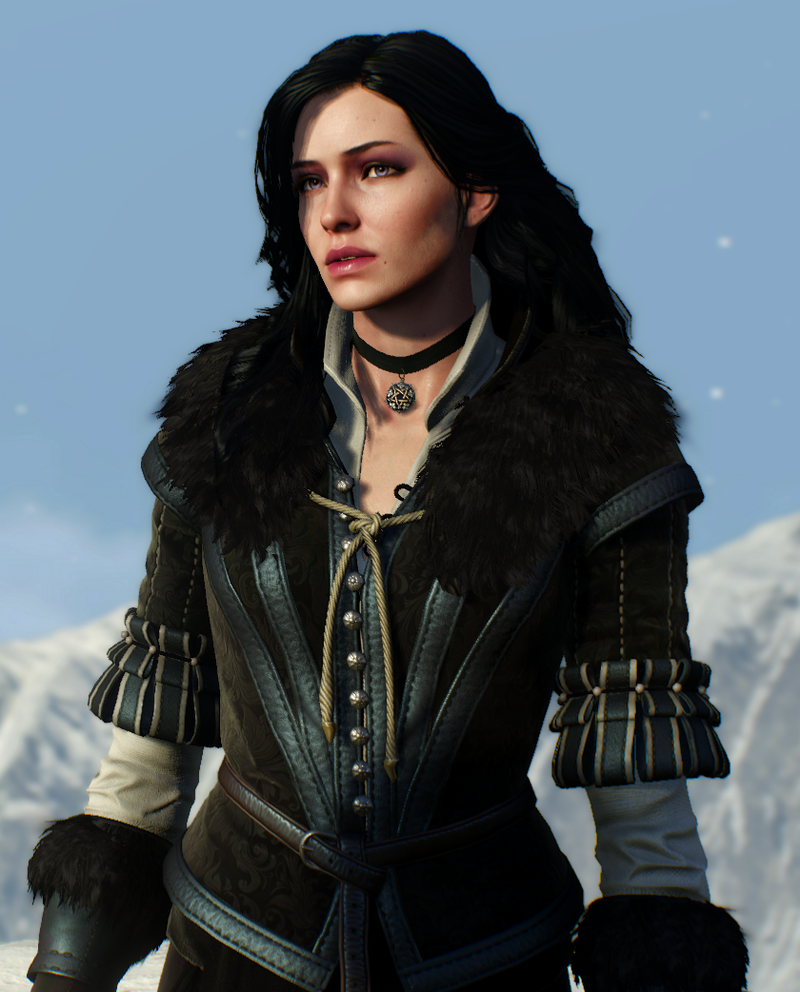

Yennefer of Vengerberg, born on Belleteyn in 1173, was a sorceress who lived in Vengerberg, the capital city of Aedirn. In the books she was Geralt of Rivia's lover by destiny and a mother figure to Ciri, whom she viewed like a daughter to the point that she did everything she could to rescue the girl and keep her from harm.
Yennefer Of Vengerbeg
In the books Yennefer was a supporting character that served as Geralt's on and off lover, and a mother figure to Ciri. She met Gerlat in a town called Rinde when he was fighting a djinn. She met Ciri in the temple of Miltelle where she trained her to be a sorceress.
In the games Yennefer first was with the Wild Hunt but was saved by Geralt, the next time we see her it is in the Wither 3 where she helps Geralt look for Ciri and is working with the empire of Nilfgaard.
Yennefer in the Witcher 3